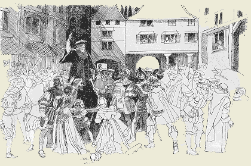

The United States in Prophecy?
William Diehl
The Protestant Reformation is now to be completed in its mission to restore all that the Man of Sin has taken away from true apostolic Christianity. The only actual prophetic date given us in the word of God is the "seventy weeks" of years in Daniel 9. This prophecy describes the 490 year time period from the decree to restore the city of Jerusalem in 457 BC unto the year of AD 34. It is during the final seven year "week" of this prophecy when our Lord would begin His sacred redemptive ministry with His baptism in AD. 27. During this final "week" of seven years, Christ died upon the cross for the sins of the world in AD 31 and the Jewish nation had the gospel preached to them until AD. 34 when they as a nation fully rejected the Christian gospel. This is the only prophetic date of the bible. The correct understanding of this Messianic prophecy is unraveled by progressively combining the mysterious symbols found in Daniel 2, 7, and 9. .
In John's Revelation in the New Testament, John has taken the symbols which Daniel in chapter 9 of the Old Testament employs to describe the Messiah's three and one half year redemptive mission to ultimately die to make atonement for the sins of the world and he uses these symbolically to reapply them to the Christian era. He uses the "3 and 1/2 years" or "forty-two months" symbolically to represent the entire Christian era when the true Christian church will prophesy in "sack cloth" as the "woman in the wilderness". Daniel tells us that the Messiah would minister for a literal "3 and 1/2" year period. But John takes up this term "three and one half" and uses it as a symbolic term of "3 and 1/2 years" to figuratively represent the Christian era when the "Beast" and the "image to the Beast" and the "False Prophet" in Revelation would persecute the church throughout the Church age.
The first power which Paul refers to is the Imperial Roman Empire which "restrains" or holds back the appearance of the second power which Paul calls the "man of sin" who "sits in the temple of God" claiming to speak for God. This first power, the Roman Empire, "restrains" the development of the second power, the papacy, until this first power is "taken out of the way" (receives a "deadly wound", Rev 13). Then the "falling away" of which Paul spoke fully developed and the Papacy took over as the visible apostate ruler of the Christian church and eventually the entire Roman Empire after its fall, fragmentation, and re-emergence as the "Holy Roman Empire". The authority of the Papacy falsely claimed to be able to forgive sin and to speak infallibly for Christ as the head "vicar of Christ". Eventually the power of the Papacy grew to the point of even controlling the secular affairs of the Holy Roman Empire and even to the present day claims to the only true Christian church. This "man of sin" is certainly the papacy which fully developed after the fall of the Roman Empire and which took over the title of "Pontiff" of Rome from the title that the Caesars of Rome applied to themselves, "Pontifex Maximus". The "falling away" and apostasy from the true Gospel actually began in Paul's day while the Roman Empire was still in ascendancy. It was Paul in 2 Thess 2 who predicted the "taking away" of the pagan Roman Empire as the persecutor of the church to be replaced by a pseudo-Christianized "Man of Sin" that would be the final persecuting power that makes war with the true evangelical church. This apostate pseudo-Christian religion which takes over the fallen Roman Empire is represented by John in Revelation 13:11 as a "lamb-like two horned beast", the Papacy, who takes over the governance of the fallen Roman Empire and ruled over the "Holy" Roman Empire, symbolized by the "10 horns" or divisions of the divided fallen Roman Empire. These two powers to which Paul refers in 2 Thessalonians 2 are the same "beasts" mentioned in Revelation 13---they are 1.) the dreadful seven headed ten horned "beast" which receives a deadly wound and 2.) the two horned "beast" which speaks like a "lamb" and which comes after one of the 10 horns receives a deadly wound and then this lamb-like beast makes an "image" to the first beast. It is very clear that these two "beasts" are Imperial Rome and then Papal Rome. The Papacy took over the throne of Imperial Rome after its fall. The early Christian church of John's day recognized the 7 headed beast with ten horns of Revelation 13:1 as the Roman Empire of their day. The early Christians awaited with great trepidation the arrival of the apostate antichrist lamb-like "Man of Sin" which John and Paul predicted would arise. The "Image to the beast" power ruled by the one called the "false prophet" came into full power following the fall of the Roman Empire with the rise of the Papacy. But the roots of the Papacy began to sprout even in John and Paul's day in the form of the Ebionite Gnostic Judaising Circumcision party who sought to destroy the Gospel truth of justification by faith alone in the doing and dying of Christ on the cross. The Ebionites denied the two vital teachings of the apostolic gospel----1.) the completed vicarious (substitutionary) atonement of Christ on the cross and 2.) His eternal divinity as God incarnate in the person of Christ. They sought to impose a system of salvation by mere imitation of the life of Christ and doing good works of obedience of the moral Law and the ceremonial Levitical law including circumcision for one's acceptance before God—-an erroneous system of salvation by attainment rather than salvation by faith alone in the atonement of Christ on the cross. Paul's epistles to the Romans, Galatians, and the Colossians dealt with this Ebionite heresy and this heresy is still the basis of Roman Catholic doctrine unto the present day. It was not until God commenced the Protestant Reformation of the 16th century that the full truth of the gospel began to be recovered in the message of God's justification of repentant sinners by His unmerited grace alone through faith alone in the sinless life and atoning death of the Lord Jesus Christ alone as revealed in the bible alone. However, having said this about how to properly understand the prophecies of Daniel and Revelation, this does not rule out non-canonical prophetic utterances throughout the years of the Christian era to give the suffering believers hope and assurance about the future. The Lord gave light on specific future events to various non-canonical prophets even in the apostolic era. We are urged by the apostle Paul not to despise the gift of prophecy. In our era this type of non-canonical gift of prophecy would not rule out the Lord giving light as to how the United States of America would become a world power and eventually have a major role to play in the final events of the great controversy between truth and error. This last manifestation of non-canonical prophecy has revealed just such a final conflict over the Law of God and His Sabbath. Each generation since the apostolic era has had its testing truths or "seal" of God's approval for its time in the war against the word of God and the gospel of Christ. We are to gather up the recovered precious rays of light which the Lord has shed upon each generation and add them to the arsenal of the recovered truths of "the faith once delivered to the saints" in the apostolic era, but which have been lost because of the errors of the satanic "lamb-like beast", the papacy. The doctrinal battles throughout the entire Christian era have been over 1.) the truth of the full divinity of our Lord Jesus Christ, 2.) the truth of the sinless human nature of Christ, 3.) the truth of the resurrection of the dead, 4.) the truth of the unlimited vicarious substitutionary atonement of our Lord on the cross of Calvary, 5.) the truth of the distinction between imputed righteousness and imparted righteousness, 6.) the truth of the Bible as the only authoritative source for doctrine rather than man-made tradition, 7.) the truth of justification of repentant sinners by God's unmerited grace alone through faith alone in the sinless life and atoning death of Christ alone. Many more truths which have been recovered from the dunghill of papal errors and restored to the true gospel of Christ could also be listed which have been dealt with in this www.PresentTruthMag.org web site. But In the finals days of this earth's history God is recovering the full truth of the complete harmony of the Law of God and the Gospel of Christ. The ferocious conflict against both Antinomianism on the one hand and Legalism on the other hand is being wages today as never before. The struggle to recover the true seventh day Sabbath of the fourth commandment of the Decalogue against the error of Sunday sacredness has become one of the focal points in today's religious controversy. The issue involved is much broader than merely just which day of the week is the holy Sabbath day of the bible. The seventh day Sabbath of the fourth commandment is Christ's emphatic "NO!!!" to Darwinism and its attack upon the gospel and the inerrancy of the word of God. The Sabbath points us back to God's original creation of a sinless universe in six literal days; to the fall of Adam and the entrance of sin, suffering, and death: and to the divine covenantal promise of a Seed who would crush the Serpent's head. Thus we can truly say that each generation has waged specific doctrinal warfare and had the "seal" of God's truth in opposition to the "mark of the Beast" error. Soon the final conflict will be ended and our blessed Lord shall return to rescue His embattled spiritual Israel, symbolically called the "144,000", gathered from every generation, and from every nation, kindred, tongue and people. Even so, come Lord Jesus. Amen. See also: The Meaning of the Seventh-day Adventist Movement |
 To learn the identity of the two "beasts" of Revelation 13, we must allow the Bible to interpret itself. The apostle Paul in 2 Thessalonians 2 speaks of two powers which make war against the evangelical gospel of God's forgiveness (justification) of repentant sinners by grace alone through faith alone in the sinless life and atoning death of our Lord on the cross of Calvary.
To learn the identity of the two "beasts" of Revelation 13, we must allow the Bible to interpret itself. The apostle Paul in 2 Thessalonians 2 speaks of two powers which make war against the evangelical gospel of God's forgiveness (justification) of repentant sinners by grace alone through faith alone in the sinless life and atoning death of our Lord on the cross of Calvary.  The false doctrines and horrific inquisitions of the Roman Catholic church are those of the Antichrist prophesied by the apostles Peter, Paul, John, and Jude. This is the "Man of Sin" who would cause a "falling away" in the Christian church, and then, after the collapse of the Roman empire, take over the reins of both the church and the Holy Roman Empire. Most of the Protestant reformers believed and taught this. This is exactly what the 13th chapter of Revelation describes: the first "beast" is the Roman Empire of the apostolic era, the second "lamb-like beast" is the Roman Catholic "image to the beast" which through her false pagan doctrines revives and restores the pagan pantheon of the old Roman gods of the mortally wounded Roman Empire.
The false doctrines and horrific inquisitions of the Roman Catholic church are those of the Antichrist prophesied by the apostles Peter, Paul, John, and Jude. This is the "Man of Sin" who would cause a "falling away" in the Christian church, and then, after the collapse of the Roman empire, take over the reins of both the church and the Holy Roman Empire. Most of the Protestant reformers believed and taught this. This is exactly what the 13th chapter of Revelation describes: the first "beast" is the Roman Empire of the apostolic era, the second "lamb-like beast" is the Roman Catholic "image to the beast" which through her false pagan doctrines revives and restores the pagan pantheon of the old Roman gods of the mortally wounded Roman Empire.